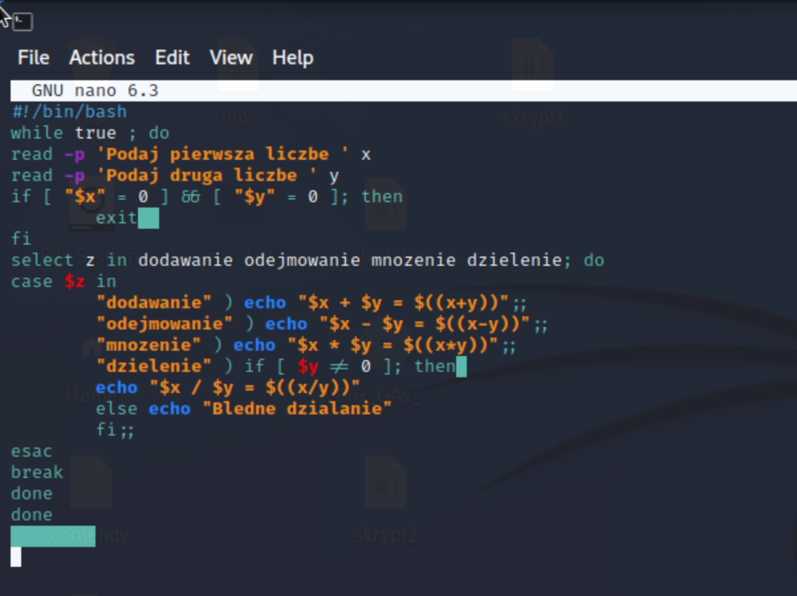
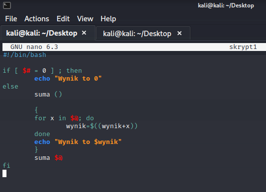
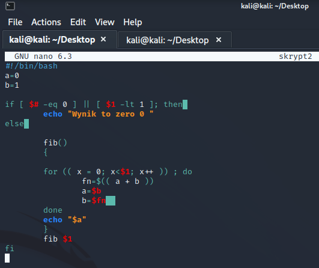

Zadania z basha
2024-01-05
Ostatnio na zajęciach musiałem napisać trzy programy. Poniżej zamieszczam polecenia wraz z rozwiązaniami.
Proszę napisać skrypt realizujący prosty kalkulator czterodziałaniowy. Działanie kalkulatora powinno być następujące:
Wczytuje z klawiatury dwie liczby x i y
Pyta użytkownika, jakie działanie wykonać ('dodawanie', 'odejmowanie', 'mnozenie', 'dzielenie')
Wypisuje wynik w postaci, np.: 7 * 8 = 56 (w przypadku próby dzielenia przez 0, skrypt powinien wypisać komunikat o zabronionej sytuacji)
Wraca do punktu 1.
Skrypt powinien zakończyć działanie, jeśli użytkownik poda x = 0 i y = 0.
A tu pokazne jest działanie kalkulatora

Proszę napisać skrypt, który będzie zawierał funkcję o nazwie "suma", która wypisze sumę wszystkich swoich parametrów. Zakładamy, że parametry są liczbami całkowitymi. Przy braku parametrów funkcja powinna wypisać 0. Funkcję proszę także wywołać w skrypcie z argumentami podanymi dla skryptu.

Proszę napisać skrypt, który bedzie zawierał funkcję o nazwie "fib", która wypisze n-ty wyraz ciągu Fibonacciego (pierwsze dwa jego elementy to 1, każdy następny jest sumą dwóch poprzednich): 1, 1, 2, 3, 5, 8, 13, 21,... Funkcję proszę także wywołać w skrypcie z argumentem podanym dla skryptu. Dla braku argumentu, lub jeśli jest mniejszy niż 1 funkcja powinna wypisać 0.

Skrypty te bardzo mi się spodobały i w planach mam w najbliższym czasie wykońać jakiś swój ciekwaszy pomysł który pozowli mi lepiej poznać tej język